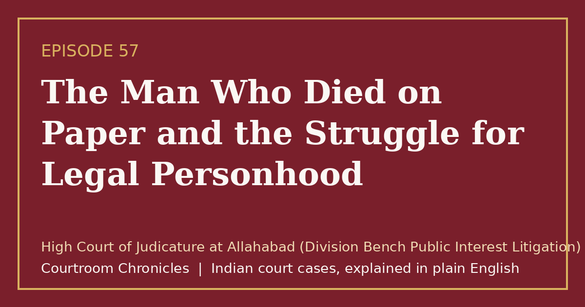

Episode 57
The Man Who Died on Paper and the Struggle for Legal Personhood
Declared dead in village land records through a petty bribe, a living weaver fought for eighteen years to prove his existence and expose an entire underworld.
Constitutional lawProperty lawCriminal lawNatural justice
#CourtroomChronicles#IndianLaw#Article21#LandRights#LegalPersonhood#PublicInterestLitigation#AllahabadHighCourt

Listen
- Court
- High Court of Judicature at Allahabad (Division Bench Public Interest Litigation)
- Date of Decision
- January 7, 2000 (Public Interest Reference) and February 20, 2023 (Compensation Plea)
- Origin of Dispute
- Fraudulent 1976 land revenue entry recording a living twenty-one-year-old weaver in Azamgarh as deceased
- Administrative Restoration
- Official revenue rectification order issued on June 30, 1994 after eighteen years
- Systemic Discovery
- District audit uncovered forty-two to ninety similar living citizens falsely recorded as dead
Key takeaways
- Legal existence in state records is foundational to exercising property, banking, and constitutional rights.
- Manipulating land revenue registers to erase living owners is a criminal offence against public justice, not a mere clerical error.
- Exposing widespread paper-death scams helped drive the computerization and biometric verification of rural land records.
The case in brief
In July 1976, a twenty-one-year-old handloom weaver in Azamgarh discovered that his relatives had bribed a village revenue clerk to record him as deceased under Section 34 of the Uttar Pradesh Land Revenue Act and transfer his one-acre plot to their names. When he appeared in person at the revenue office, clerks refused to accept his petitions because a person listed as dead in official registers possessed no legal standing to challenge the record.
Over eighteen years of bureaucratic stonewalling, the weaver adopted the suffix meaning deceased, staged mock protests, contested parliamentary elections, and threw protest leaflets in the state assembly to generate official arrest records proving he was alive. After international press attention, the district administration conducted a village inquiry and officially restored his living status and land on June 30, 1994.
In 1999, the Allahabad High Court took suo motu notice of the wider phenomenon uncovered by an association of similarly erased farmers, and district audits soon revealed dozens of living citizens declared dead on paper to seize their land. On January 7, 2000, the High Court condemned the fabrication of public records as a violation of livelihood and life under Article 21, directed criminal prosecutions against corrupt officials, and referred the systemic crisis to the National Human Rights Commission, though a later 2023 writ bench declined direct monetary compensation under Article 226.
Timeline
- Fraudulent Death Entry
A village revenue official records a living twenty-one-year-old weaver as deceased in land registers to transfer his land to relatives.
- Legislative Assembly Protest
The weaver throws leaflets in the state assembly gallery, leading to a judicial remand order that officially documents him alive.
- Official Resurrection Order
Following a public village inquiry, the district revenue officer cancels the fraudulent mutation and restores his land after eighteen years.
- High Court Public Interest Order
The Allahabad High Court brands the living-dead scam an Article 21 violation, orders prosecutions, and refers the crisis to the human rights commission.
- Compensation Writ Dismissed
A Division Bench declines a twenty-five-crore-rupee writ compensation claim, holding that civil damages should be pursued in regular civil courts.
What the court decided
Suo motu public interest petition disposed of on January 7, 2000 by referring the systemic land-record fraud to the National Human Rights Commission and directing criminal and departmental proceedings; a subsequent writ claim for state compensation was dismissed in February 2023.
Key holdings
- Fabricating land revenue records to declare living farmers dead and dispossess them of agricultural land deprives them of livelihood and violates Article 21 of the Constitution.
- Conspiring relatives and record-keepers who interpolate official registers commit offences against public justice requiring criminal prosecution before Chief Judicial Magistrates.
- Given the scale of systemic dispossession across multiple districts, the High Court referred the matter to the National Human Rights Commission for ongoing investigation and monitoring.
- In 2023, the High Court held that writ compensation against the State under Article 226 was inappropriate where private relatives instigated the fraud and civil remedies were available.
Legal principles
Right to Legal Personhood and Livelihood
The constitutional guarantee of life under Article 21 includes recognition as a living legal person and protection of the agricultural livelihood on which survival depends.
In this case: The High Court held that erasing a citizen from official land registers strips away their livelihood, dignity, and equal protection of the laws.
Accountability for Falsified Public Records
Public servants entrusted with maintaining official registers face criminal and departmental liability when they fabricate entries in collusion with private land grabbers.
In this case: The bench ordered public-servant complaints to be prosecuted before magistrates and required departmental action against erring revenue officials.
Limits of Constitutional Tort Remedies
Extraordinary writ compensation under Article 226 is generally withheld when disputed facts stem from private fraud rather than direct state policy.
In this case: Nearly two decades after his resurrection, the court declined the petitioner's writ claim for twenty-five crore rupees in state damages.
The law then and now
Because the fraudulent land mutation and court proceedings occurred before July 1, 2024, the Indian Penal Code, 1860 and the Indian Evidence Act, 1872 governed the offences and records.
Left: the law applied to this case. Right: the matching provision today (the new criminal codes apply only to offences on or after 1 July 2024).
Replaced by Section 318(4) of the Bharatiya Nyaya Sanhita, 2023, retaining imprisonment up to seven years and fine for cheating involving property delivery.
Re-enacted as Section 338 of the Bharatiya Nyaya Sanhita, 2023, preserving severe penalties for forging title documents and valuable securities.
Consolidated into Section 336(3) of the Bharatiya Nyaya Sanhita, 2023, retaining imprisonment up to seven years and fine for forgery committed to cheat.
- Indian Penal Code, 1860Section 218Public servant framing incorrect record or writing with intent to save person from punishment or property from forfeitureBharatiya Nyaya Sanhita, 2023Section 256Public servant framing incorrect record or writing with intent to save person from punishment or property from forfeiture
Re-enacted as Section 256 of the Bharatiya Nyaya Sanhita, 2023, maintaining criminal liability for public servants who intentionally frame false official records.
- Bharatiya Sakshya Adhiniyam, 2023Section 29Relevancy of entry in public record or an electronic record made in performance of duty
Re-enacted as Section 29 of the Bharatiya Sakshya Adhiniyam, 2023, expressly extending public-record relevancy to electronic and digital land records.
- —
Unchanged. See all 12 episodes on this provision →
Sources
- Judgment of the High Court of Judicature at Allahabad, January 7, 2000
- Constitution of India (Official Legislative Department Text)
- Bharatiya Nyaya Sanhita, 2023 and Indian Penal Code, 1860 Comparative Table (UP Police)
- Bharatiya Sakshya Adhiniyam, 2023 and Indian Evidence Act, 1872 Comparative Table (UP Police)